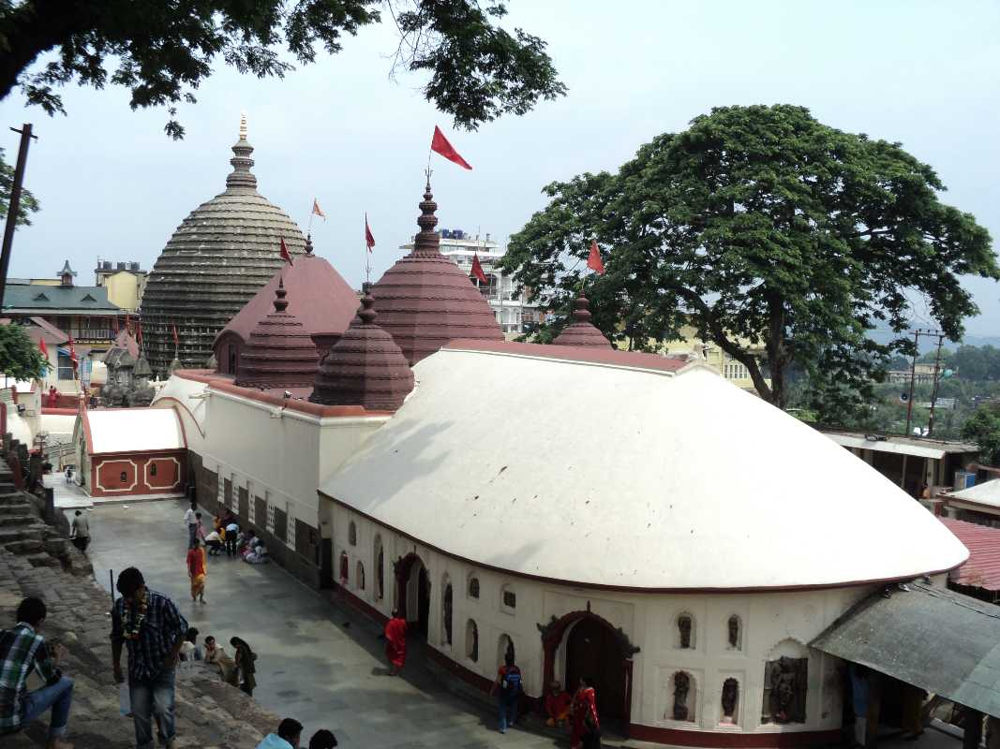
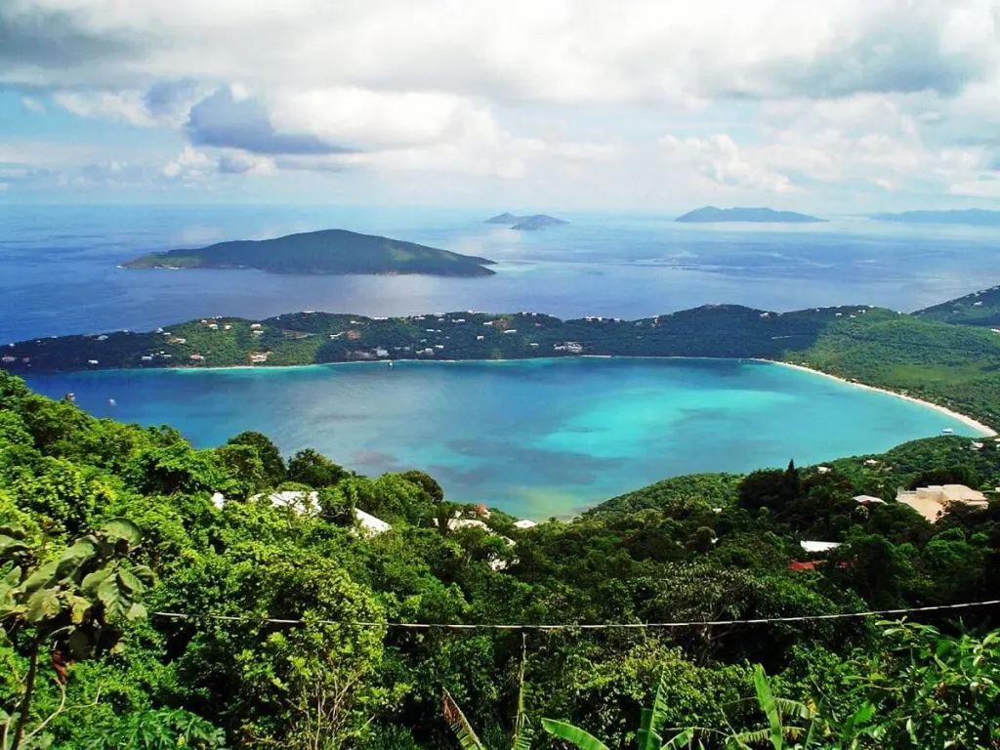
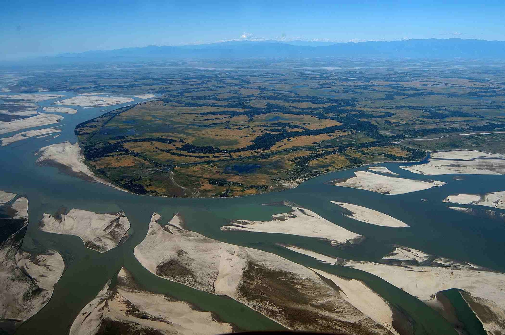

From misty hills and emerald valleys to the mighty Brahmaputra and vibrant traditions — Assam welcomes you to explore its untamed beauty and soulful heritage. Discover some of the most awe-inspiring places right here with TownTrek.

Perched atop the Nilachal Hills overlooking the Brahmaputra River, Kamakhya Temple is one of India’s most revered Shakti Peethas. Dedicated to Goddess Kamakhya, it symbolizes feminine power and spirituality. The temple’s unique architecture and sacred rituals attract devotees and travelers year-round. From its hilltop, visitors can witness breathtaking sunrise and sunset views over Guwahati.

Home to the majestic one-horned rhinoceros, Kaziranga is one of Assam’s most famous national parks. Explore vast grasslands, diverse wildlife, and scenic views along the Brahmaputra River.

Haflong is a beautiful place surrounded by hills. It is located in the state of Assam in India. Moreover, this place is also the headquarters of the Dima Hasao district. For its scenic beauty, this place became a tourist hotspot. Your holidays will be more exciting by choosing this destination. It is the most famous hill station in Assam, so several tourists visit it yearly.

Majuli, the world’s largest river island, rests gracefully on the Brahmaputra River. Known for its vibrant Satras (Vaishnavite monasteries), it is the heart of Assam’s art, music, and spirituality. Lush green landscapes, traditional Mishing villages, and serene sunsets make Majuli a paradise for culture lovers and nature enthusiasts alike.
Email: www.towntrek.com
Phone number: +91-8638987654
Address : Panbazar, Guwahati -781001